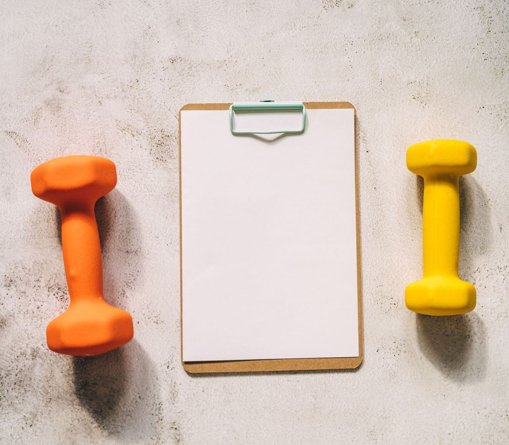

Starter plan
At Home Workout Plan for Beginners: A 4-Week Calendar

This guide contains affiliate links. If you buy through them, Holistic Life may earn a small commission at no extra cost to you. How we use affiliate links.
Quick answer
- Week one is four short days, not seven: two 15-minute routines and two 10-minute walks, with three rest days.
- Each week adds one thing: a third walk, an optional strength day, then a little more time.
- Missed a day? Do today's box and never two days in one. Missed three or more days in a week? Repeat that week.
- No equipment is needed. Dumbbells are only for the optional strength day from week three.
It is easy to start a new routine too big. This at home workout plan starts small on purpose. It is a calendar for your first month, with short routine days, easy walks and rest days all marked in.
Our three starter guides teach the moves. This page is the month around them: it tells you what kind of day it is, and points you to the right guide for the details. This is a nurse-run site, so the plan leans toward rest. No week adds more than one new thing.
Before you start
You need a sturdy chair, a wall, a countertop and somewhere safe to walk. Put the calendar where you will see it every day.
If you have a health condition, are pregnant, or have not been active for a long time, check with your clinician first, and stop if you feel sharp pain, dizziness or chest pain.
The four kinds of days
- Routine day: the 15-minute no-equipment routine, with a warm-up, two rounds of five low-impact moves and a cool-down. The moves, their easier and harder versions and the timings are in our 15-minute beginner home workout.
- Walk day: an easy walk at a pace where you can still talk. How to pace it, and where to walk when the weather is bad, is in our beginner walking plan.
- Rest day: left empty on purpose. Rest is part of the plan.
- Strength day: optional, from week three, with a pair of dumbbells. It takes about 30 minutes, and the six moves are in our beginner dumbbell workout. Skip it, and that day stays a rest day. Nothing else changes.
Each of those guides has its own schedule for doing that one thing alone. This calendar blends the three, so it asks for a little less of each.
Your 4-week calendar
Start on a Monday if you can. If your week runs differently, slide the days and keep the order.
Weeks 1 and 2
| Day | Week 1 | Week 2 |
|---|---|---|
| Mon | Routine | Routine |
| Tue | 10-minute walk | 15-minute walk |
| Wed | Rest | Rest |
| Thu | 10-minute walk | 15-minute walk |
| Fri | Routine | Routine |
| Sat | Rest | 15-minute walk |
| Sun | Rest | Rest |
Weeks 3 and 4
| Day | Week 3 | Week 4 |
|---|---|---|
| Mon | Routine | Routine |
| Tue | 20-minute walk | 25-minute walk |
| Wed | Strength or rest | Strength or rest |
| Thu | 20-minute walk | 25-minute walk |
| Fri | Routine | Routine |
| Sat | 20-minute walk | 30-minute walk |
| Sun | Rest | Rest |
What each week adds
Each week changes one thing, so you are never learning too much at once.
- Week 1: the rhythm. Four active days: two routine days with two rounds each, and two 10-minute walks. Three rest days. The only goal is to get the pattern into your week.
- Week 2: a third walk. Saturday becomes a walk day, and every walk grows to 15 minutes.
- Week 3: an optional strength day. Wednesday can be a strength day. Walks grow to 20 minutes. Routine days stay at two rounds.
- Week 4: a little more time. Walks are 25 minutes, with 30 on Saturday. On routine days, add a third round or one harder version of a move, but only if two rounds feel easy.
How hard it should feel
On walk days, use the talk test. The CDC describes it as a rule of thumb: at a moderate effort you can talk, but not sing. If you could sing, you may go a bit faster. If you can barely talk, slow down.
On routine days, finish a little tired, not wiped out.
After a missed day
Here is the rule.
- Never do two days in one. Do not try to catch up.
- Missed one day: do today's box and carry on.
- Missed three or more days in a week: repeat that week.
- Away for two weeks or more: start again at week one. It will feel easier than the first time.
When to stay on a week longer
Stay on a week if the walks did not feel comfortable at a talking pace, if you missed more than two of its days, or if it simply felt like a lot. Repeating a week is part of the plan, not a failure.
Where this sits against the CDC goal
The CDC says adults need at least 150 minutes of moderate-intensity activity a week, such as 30 minutes a day, 5 days a week. Adults also need at least 2 days of muscle-strengthening activity each week. The CDC adds that you can spread activity through the week and break it into smaller chunks, and that some activity is better than none.
Week four of this calendar holds 80 minutes of walking, plus two routine days and an optional strength day. That is short of 150 minutes, which is to be expected in a first month. The CDC counts exercises that use your body weight as muscle-strengthening activity, so the routine days are a start on that goal. Lifting weights counts too.
Optional gear
You do not need to buy anything for weeks one and two. If you want a little more comfort or help later, these are the items that fit this plan.
Exercise mat
Optional from day one. A mat is kinder to your knees and wrists on the floor moves of a routine day, especially on a hard floor.
What to look for
- At least 6 mm thick, to cushion knees and wrists
- A non-slip texture on both sides
- About 6 feet long, so you can lie down at full length
Options that fit
- Gruper non-slip exercise mat, 72 x 24 inches Non-slip texture on both sides, sold in 6 mm and 8 mm thicknesses (paid link)
- KEEP extra wide exercise mat, 7 mm thick, 72 x 32 inches 7 mm of padding, non-slip on both sides and 72 inches long (paid link)
See more exercise mats on Amazon (paid link)
Adjustable dumbbells
Only for the optional strength day from week three. One adjustable pair lets you start light and change weight as you get stronger.
What to look for
- A starting weight that is light enough for a beginner
- A quick, secure way to change weight, with no loose plates
- A compact stand or tray so they store neatly
Options that fit
- Keppi adjustable dumbbells, 5 to 25 lb, pair Starts at 5 lb, changes with a twist of the handle, and has a storage tray (paid link)
- Core Fitness adjustable dumbbells, 5 to 50 lb, pair Starts at 5 lb, with twist-lock handles and a cradle for each dumbbell (paid link)
See more adjustable dumbbells on Amazon (paid link)
Interval timer
Your phone works fine. A timer is for people who would rather keep the phone out of the workout and let a simple alert mark each stage.
What to look for
- Two intervals you can set, one for work and one for rest
- An alert you can hear or feel without looking
- A clip to wear it, or a stand to keep it in view
Options that fit
- Gymboss interval timer and stopwatch Times one or two repeating intervals, chimes or vibrates, and has a belt clip (paid link)
See more interval timers on Amazon (paid link)
Magnetic dry-erase calendar
A calendar you can see does half the reminding. Copy the four weeks onto it and tick off each day as you go.
What to look for
- A grid with a box for each day
- A magnetic back that sticks to a fridge door
- A surface that wipes clean, so you can use it again
Options that fit
- Amazon Basics magnetic dry-erase calendar, 12 x 17 inches Magnet-backed sheet with a printed grid, 4 markers and an eraser (paid link)
- Volcanics magnetic dry-erase fridge calendar, 16.9 x 11.8 inches 42 blank date squares and a notes panel on a magnetic sheet (paid link)
See more dry-erase calendars on Amazon (paid link)
After week four
Keep the calendar going. Grow your walks by about five minutes a week until most are 30 minutes. Five 30-minute walks add up to the 150 minutes the CDC describes, and week four of our beginner walking plan shows what that week looks like.
Keep two or more strength-type days in your week. If the strength day suited you, make it a regular one, and use the progress steps in the beginner dumbbell workout to move on.
Frequently asked questions
Can a beginner work out at home every day?
Moving a little most days is fine for many people. This plan still marks rest days on purpose, so a new routine has room to settle in. If you feel worn down or sore for days, take another rest day.
Do I need equipment for this at home workout plan?
No. The routine days use a sturdy chair, a wall and a countertop, and the walk days need only somewhere safe to walk. Dumbbells are only for the optional strength day from week three.
What if four weeks is too fast?
Then repeat a week, or stay on one for as long as you like. The calendar is a guide, not a deadline. Many people find a slower start is the one they keep.
Sources
Save this guide for later
Tap a pin to save it to your Pinterest boards.